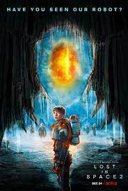
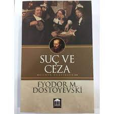

İlgi Alanlarım
- Film
- Lost in Space
- Zaman Kapanı
- Yarının Sınırında
- Kitap
- Suç ve Ceza
- Budala
- Anna Karenina
- Dizi
- Friends
- HIMYM
- Prison Break
Sevdiğim Filmler
- Lost in Space 
Lost in Space , gemileri rotasından sapan bir uzay kolonisi ailesinin maceralarını takip edenbir Amerikan bilim kurgu televizyon dizisidir.
Sevdiğim Kitaplar
- Suç ve Ceza 
Suç ve Ceza; Rodion Romanoviç Raskolnikov adındaki bir gencin işlediği çifte cinayet üzerine yaşadıklarını konu alıyor.
Sevdiğim Diziler
- Friends

Friends , 22 Eylül 1994'ten 6 Mayıs 2004'e kadar NBC'de yayınlanan ve on sezon süren David Crane ve Marta Kauffman tarafından yaratılanbir Amerikan televizyon durum komedisidir